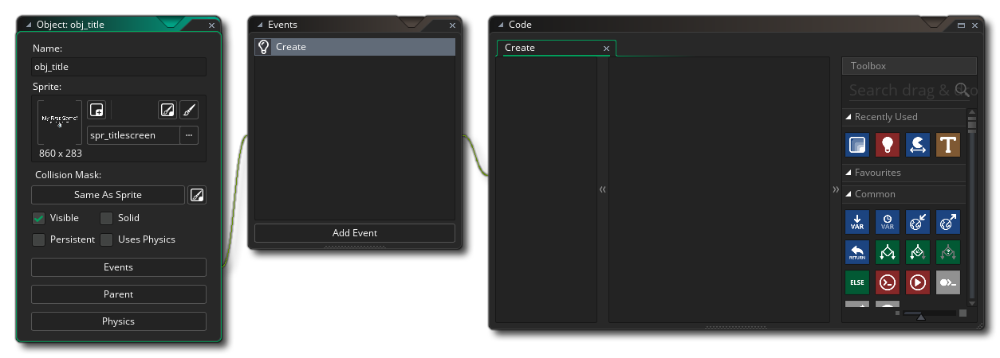
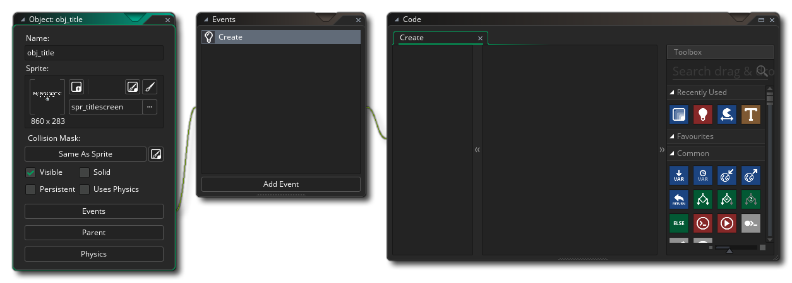
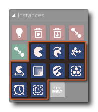
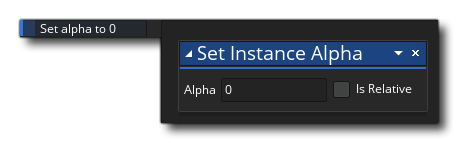
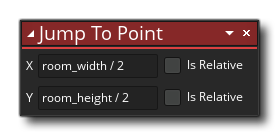
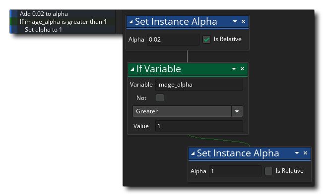
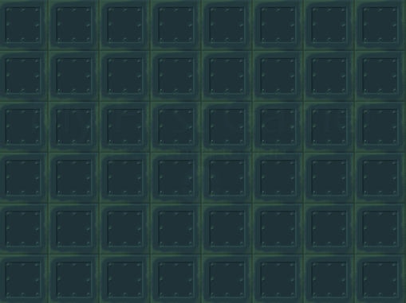

To move from one room - the title room - to the next one - the game room - we will need a new object, so go ahead and make one now (Right click  on the object resource folder and select Create). Name this object "obj_title" and assign it the title sprite we created at the start of this chapter. Now add a Create Event:

on the object resource folder and select Create). Name this object "obj_title" and assign it the title sprite we created at the start of this chapter. Now add a Create Event:

We are going to have our object draw its sprite fading in gradually, just to create a slightly nicer looking title screen. To so this we need to use the built in variable image_alpha. All instances of objects have a number of built in variables that are related to how the assigned sprite will be drawn. In Chapter 5 we explained how GameMaker Studio 2 default draws the sprite assigned to an instance of an object, and most of the objects in this game have no Draw Event. However letting GameMaker Studio 2 default draw the sprite does not mean you cannot change how it is drawn, as you can using the different built in variables. These built in variables are changed using the different transform actions from the Instances library: 
You can change things like the scale, the rotation, the colour and the alpha, all through using these actions to change the built in variables. In this case we are going to change the alpha to make the sprite "invisible" at the start of the room. For this we add the Set Instance Alpha action into the Create Event and set it to 0: 
We also want to make sure that the sprite will be drawn in the exact centre of the screen, so we need to add the Jump To Point action, from the Movement library, like this: 
This action will set the instance to the position specified, and in this case we are using the global variables, room_width and room_height to get the middle of the room (half width and half height) for the instance when created.
Next we need to add a Step Event with the following actions: 
All this action block is going to do is add a small amount to the image_alpha value and then check it to see if it is over 1, and if it is it resets it to 1. In this way we can ensure that the image alpha will increment until it reaches 1 and go no higher (this is important, as while you can set the image alpha value to more than 1 - or even negative numbers - this will have different effects on different platforms and the recommended value for this variable is always between 0 and 1).
We can now drop this object into the title room and test the game (open the room editor, click  on the object in the Resource Tree, then drag an instance of it into the room editor and release the mouse). You don't even have to worry about placing it properly because we've taken care of that in the Create Event of the object.
on the object in the Resource Tree, then drag an instance of it into the room editor and release the mouse). You don't even have to worry about placing it properly because we've taken care of that in the Create Event of the object.
